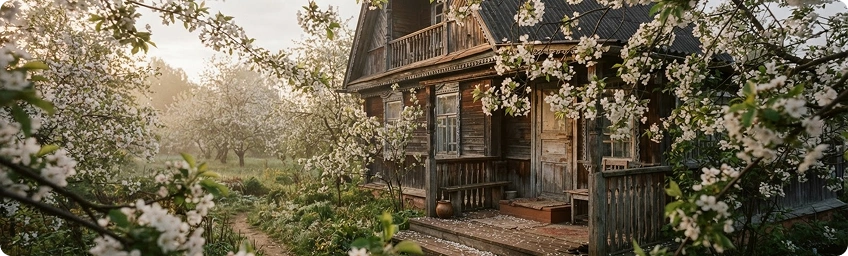

Вишнёвый сад
Действие первое

Комната, которая до сих пор называется детскою. Одна из дверей ведёт в комнату Ани. Рассвет, скоро взойдёт солнце. Уже май, цветут вишнёвые деревья, но в саду холодно, утренник. Окна в комнате закрыты.
Входят Дуняша со свечой и Лопахин с книгой в руке.
Лопахин. Пришёл поезд, слава богу. Который час?
Дуняша. Скоро два. (Тушит свечу.) Уже светло.
Лопахин. На сколько же это опоздал поезд? Часа на два, по крайней мере. (Зевает и потягивается.) Хорош и я, какого дурака свалял! Нарочно приехал сюда, чтобы на станции встретить, и вдруг проспал... Сидя заснул. Досада... Хоть бы ты меня разбудила. Дуняша. Я думала, что вы уехали. (Прислушивается.) Вот, кажется, уж едут.
Лопахин (прислушивается). Нет... Багаж получить, то да сё... (Пауза.) Любовь Андреевна прожила за границей пять лет, не знаю, какая-то она теперь стала... Хороший она человек. Лёгкий, простой человек.
Помню, когда я был мальчонком лет пятнадцати, отец мой покойный — он тогда здесь на деревне в лавке торговал — ударил меня по лицу кулаком, кровь пошла из носу... Тогда мы вместе зачем-то пришли во двор, и он выпивши был. Любовь Андреевна, как сейчас помню, ещё молоденькая, такая худенькая, подвела меня к рукомойнику, вот в этой самой комнате, в детской.